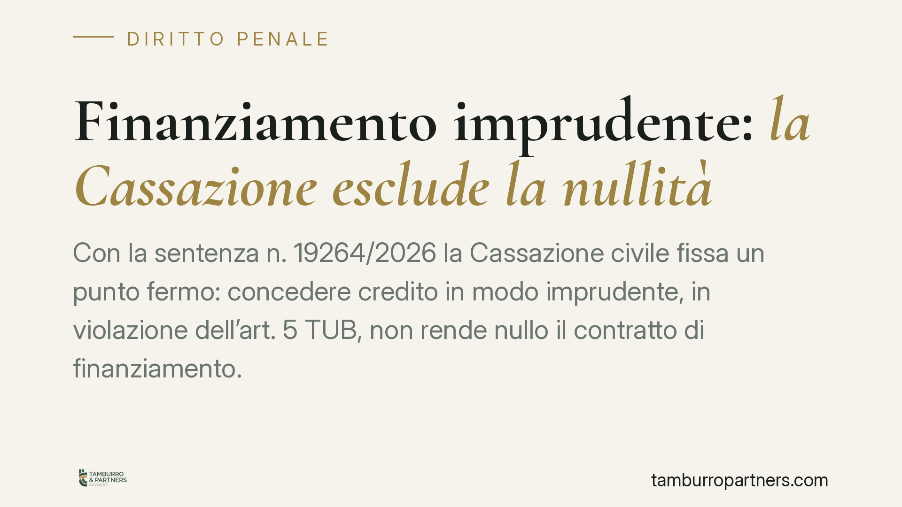

Finanziamento imprudente: la Cassazione esclude la nullità
Con la sentenza n. 19264/2026 la Cassazione civile fissa un punto fermo: concedere credito in modo imprudente, in violazione dell'art. 5 TUB, non rende nullo il contratto di finanziamento. Da quella condotta può nascere al più un obbligo risarcitorio. La nullità resta confinata ai casi in cui l'operazione integra un reato. Una distinzione che pesa su banche, imprese in crisi e curatele.

Il caso
La vicenda nasce dal contenzioso tra una banca e una srl finita in liquidazione giudiziale. I curatori contestavano alla banca di aver erogato credito in modo imprudente, sostenendo che questo rendesse nullo il finanziamento. In gioco anche il ruolo del Mediocredito Centrale come garante dell'operazione.
La Prima Sezione civile della Cassazione, con sentenza dell'11 giugno 2026, ha respinto l'impostazione. Il finanziamento imprudente non è di per sé un contratto nullo: resta valido, salvi i profili di responsabilità.
Inquadramento normativo
L'art. 5 del Testo Unico Bancario (d.lgs. 385/1993) impone agli intermediari il canone della sana e prudente gestione. È una regola di comportamento rivolta all'operatività della banca, non un requisito di validità del singolo contratto.
Qui sta il cuore della decisione. L'art. 1418 c.c. commina la nullità per contrarietà a norme imperative solo quando la norma violata incide sulla *struttura* o sul *contenuto* dell'atto (le cosiddette norme di validità). Le norme che disciplinano la *condotta* delle parti - come quelle sulla prudenza nell'erogazione del credito - appartengono invece a un piano diverso: la loro violazione genera responsabilità e obbligo di risarcire il danno, non invalidità del contratto. È la distinzione, ormai consolidata, tra regole di validità e regole di comportamento.
La nullità torna in gioco solo quando il finanziamento non è semplicemente imprudente, ma illecito: quando cioè l'operazione integra una fattispecie penale. La Corte richiama, a titolo esemplificativo, la bancarotta e l'indebita percezione di erogazioni pubbliche prevista dall'art. 316-ter c.p. In questi casi la causa del contratto è contaminata dall'illiceità e la nullità opera ai sensi dell'art. 1418 c.c.
Implicazioni pratiche
Per gli intermediari la pronuncia riduce il rischio di veder travolto l'intero rapporto per effetto di una contestazione sulla prudenza dell'erogazione. Il credito resta esigibile e la garanzia - compresa quella pubblica - non viene automaticamente meno. Resta però esposta la responsabilità risarcitoria: concedere credito a un'impresa già in difficoltà, aggravandone il dissesto, può fondare una pretesa di danno, in particolare da parte della curatela.
Per le curatele cambia la strategia processuale. Chiedere la nullità del finanziamento per violazione dell'art. 5 TUB è una strada ora preclusa. L'azione corretta è quella risarcitoria, che impone però di provare il danno e il nesso causale tra la condotta imprudente della banca e l'aggravamento del passivo.
Per le imprese finanziate la distinzione conta sul piano penale. Se dietro il finanziamento vi sono ipotesi di bancarotta o di indebita percezione di fondi pubblici, non si tratta più di imprudenza: si entra nel terreno dell'illiceità, con conseguenze che vanno ben oltre la validità del contratto.
Cosa fare in concreto
- Banche: documentate l'istruttoria del credito. La tracciabilità delle valutazioni sul merito creditizio è la prima difesa contro una futura azione risarcitoria.
- Curatori: valutate l'azione di danno, non quella di nullità. Concentrate l'attività probatoria sul nesso tra erogazione imprudente e incremento del passivo.
- Imprese e amministratori: verificate la destinazione effettiva dei fondi erogati, soprattutto se pubblici o assistiti da garanzia statale, per escludere profili ex art. 316-ter c.p.
- Garanti pubblici e privati: analizzate la validità del contratto garantito prima di opporre eccezioni di nullità destinate a non reggere.
- In ogni caso: distinguete fin dall'inizio tra contestazione sulla condotta e contestazione sulla liceità dell'operazione. Da questa qualificazione dipende l'intera strategia.
La sentenza riporta ordine su un punto spesso confuso nella prassi contenziosa. L'imprudenza si risarcisce; l'illecito si sanziona con la nullità. Confondere i due piani significa sbagliare azione.
Disclaimer
Contributo informativo a cura di Tamburro & Partners - Avv. Giuseppe Tamburro. Non costituisce parere legale.
Ogni condominio ha una storia a sé.
Se gestisci un'amministrazione e vuoi un confronto su una specifica questione condominiale, scrivi allo studio. Ti rispondiamo entro un giorno lavorativo.